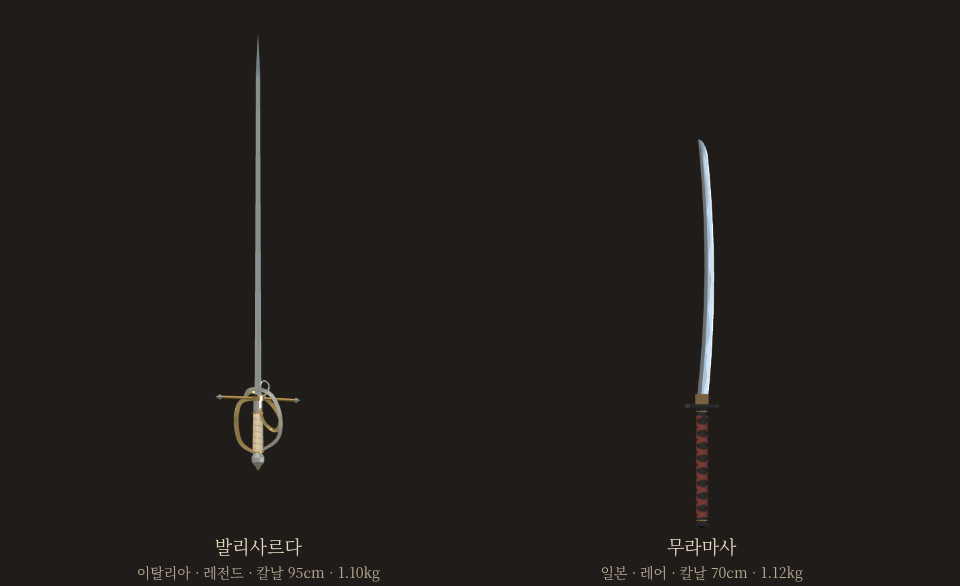
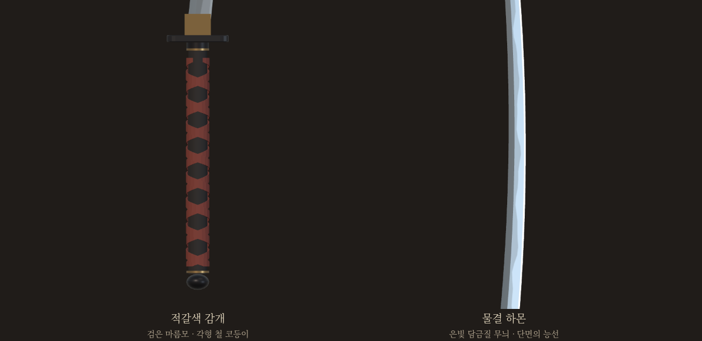
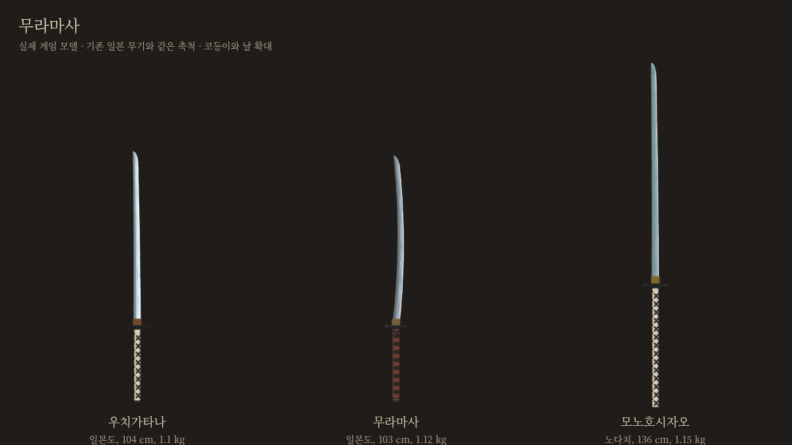
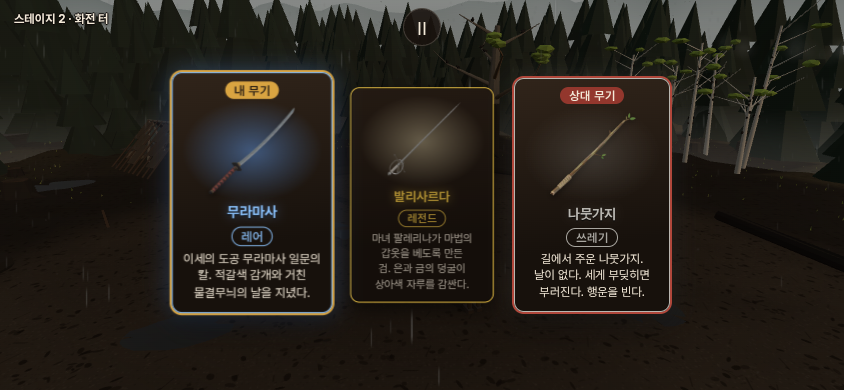
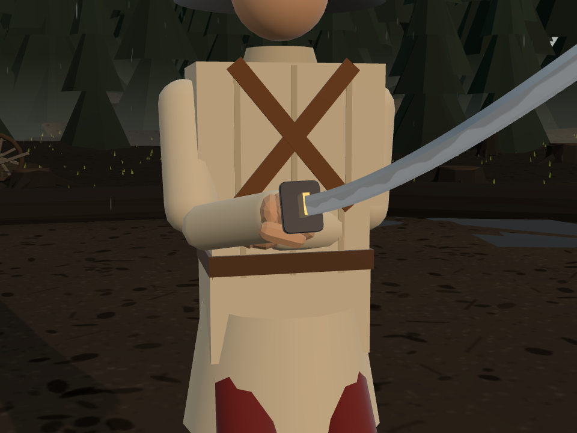

발리사르다 · 무라마사
선택하신 두 자루를 실제 게임 무기로 제작했습니다.

실제 게임 모델 관찰 화면 · 길이 차이도 같은 축척으로 표시했습니다.무라마사 · 실물과의 대조
초안은 기존 우치가타나의71cm·1.10kg를 재사용했습니다. 실물 두 기록을 대조한 뒤 사용자 결정에 따라 현재는 날70cm·휨2cm로 수정했습니다. 무게는 후속 요청에 따라1.12kg로 맞췄습니다.
도쿄국립박물관 소장품은 날66.9cm·휨2.1cm, 아오이 미술의 보존도검 감정품은 날69.4cm·휨1.9cm입니다. 두 자료 모두 완성된 칼의 무게는 공개하지 않았습니다.
날 밑동에서 칼끝까지 직선70cm, 칼등과 그 직선 사이 최대 수직 거리2cm를 실제 모델에서 측정했습니다. 자루30cm·적갈색 감개·검은 코등이는 게임용 외장입니다.
상세 스펙
| 항목 | 발리사르다 | 무라마사 |
|---|
| 유파 · 등급 | 이탈리아 · 레전드 | 일본 · 레어 |
| 종류 | 한손 찌르기검 | 양손 외날도 |
| 전체 길이 | 약114cm | 약103cm |
| 날 길이 | 95cm | 70cm |
| 휨(소리) | 직검 | 2cm |
| 자루 감개 구간 | 11cm | 30cm |
| 무게 | 1.10kg | 1.12kg |
| 베기 / 찌르기 / 둔타 | 0.50 / 1.30 / 0.70 | 1.20 / 0.90 / 0.95 |
| 등급 공격력 배율 | 1.20 | 1.05 |
| 내구도 계수 | 1.00 | 0.85 |
| 파손 | 없음 | 레어 공통 확률 |
| 별도 특수능력 | 없음 · 레전드 기운 | 없음 |
이번 게임 구현값입니다. 공격 계수와 등급 배율은 실제 피해량과 일대일로 대응하지 않습니다. 충돌 속도·맞은 부위·갑옷이 함께 작용합니다.
발리사르다 · 설명
마녀 팔레리나가 마법의 갑옷을 베도록 만든 검.
은과 금의 덩굴이 상아색 자루를 감싼다.
은금 덩굴 코등이와 상아색 감개를 적용했습니다. 전승 속 갑옷 절단은 설명의 이야기이며 별도의 방어 무시 판정은 없습니다.
발리사르다 세공 자세히 보기무라마사 · 설명
이세의 도공 무라마사 일문의 칼.
적갈색 감개와 거친 물결무늬의 날을 지녔다.

검은 각형 코등이와 적갈색 감개로 기존 일본 무기와 구분했습니다. 날은70cm·휨2cm이며, 양손 파지는 최신 우치가타나의 규격을 공유합니다.
기존 일본 무기와 비교 · 실제 카드



무라마사는 실제 도공 계열의 이름입니다. 이 외장과 규격은 게임용 각색이며 특정 유물 한 자루의 복원은 아닙니다. halfsword-codex 포크의 별도 검토판입니다.